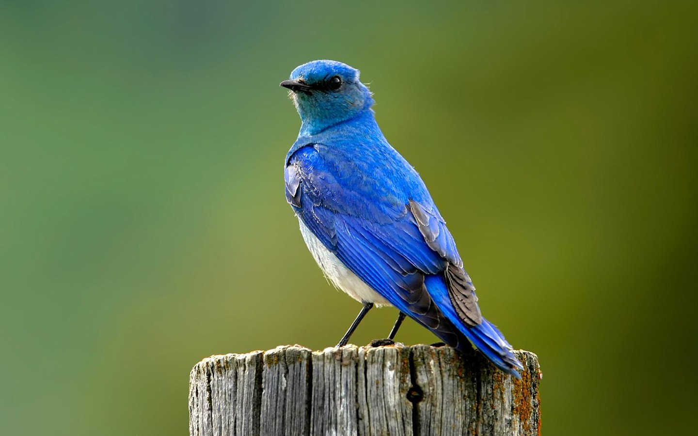

Training Your Older Or Re-Homed Pet Bird
|

|
It’s a challenge to work with a pet bird that has learned, through an unhappy history, to distrust people or to keep them at bay with bites and intimidation. When training older or re-homed pet birds, you are establishing a relationship between person and parrot, so that the bird can understand it is involved in a healthy, cooperative relationship.Older or re-homed birds might be more reserved about being handled or even being approached. You might have to begin training with the bird in the cage and only slowly move away from it when the bird becomes comfortable with you. Training sessions should be short but frequent. Two short sessions, about 10 minutes, each day will suffice. |
Perch Training
|
Training your bird to step onto a stick or perch might be your first goal if the bird is fearful of hands or just reluctant to approach you. It will also allow others in the household to safely handle your bird.Offer the stick to your bird just above its feet at its abdomen. It most likely will naturally step up onto the higher object. Hold your hand steady so the perch does not wobble. If your bird does not step onto the perch, hold a favorite treat just out of reach so it must step up to retrieve it. Each time your bird steps up, reward it. Offer praise, food or a chance to play with its favorite toy. |
Some other tips for training a re-homed or older pet bird include:
|
|
Step-By-Step
|
To be successful in training, keep your bird comfortable and do not overwhelm the bird by taking on too much at a time. Break the tricks into small steps and before moving onto another step, be sure your bird has mastered the previous step. Turning a single trick into tiny steps allows plenty of opportunities for praise and rewards. |